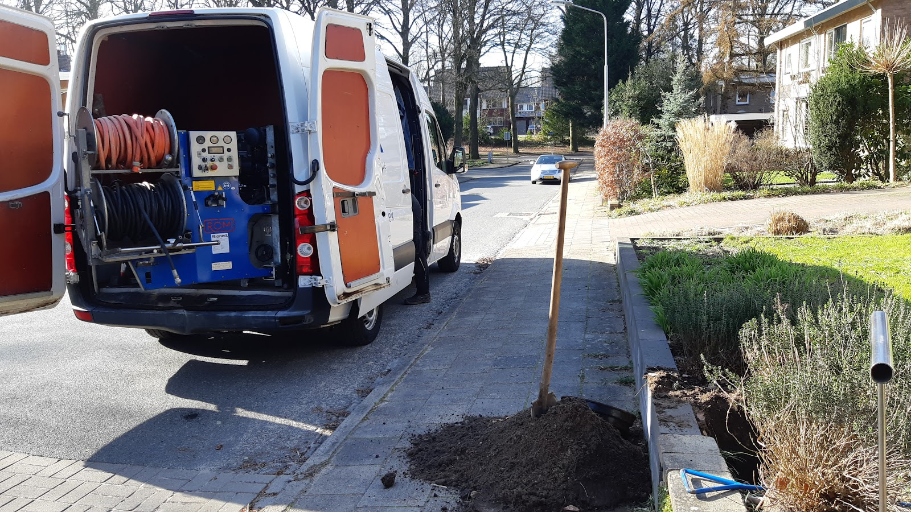
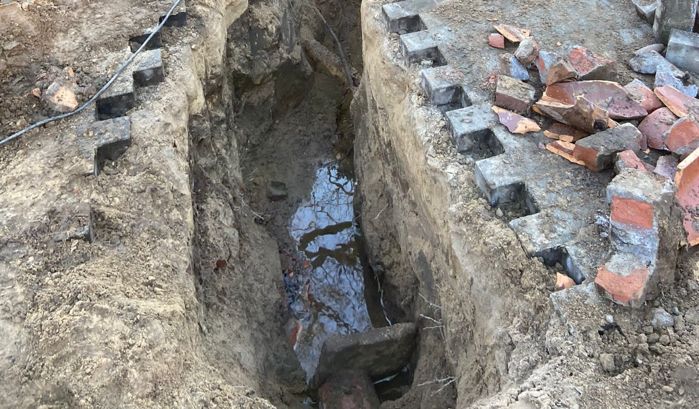
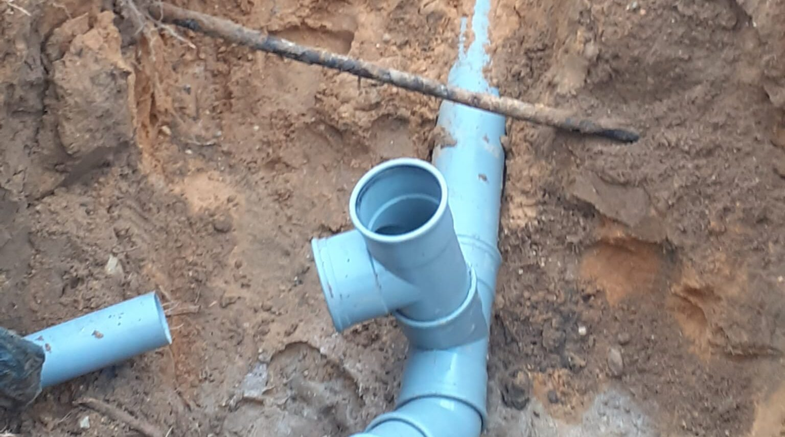
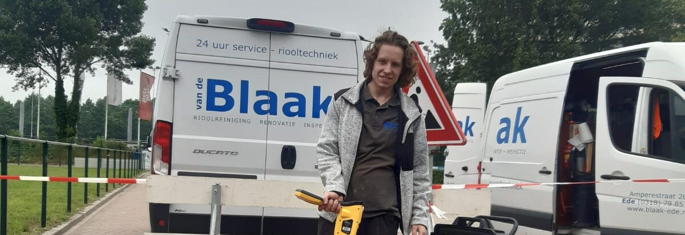
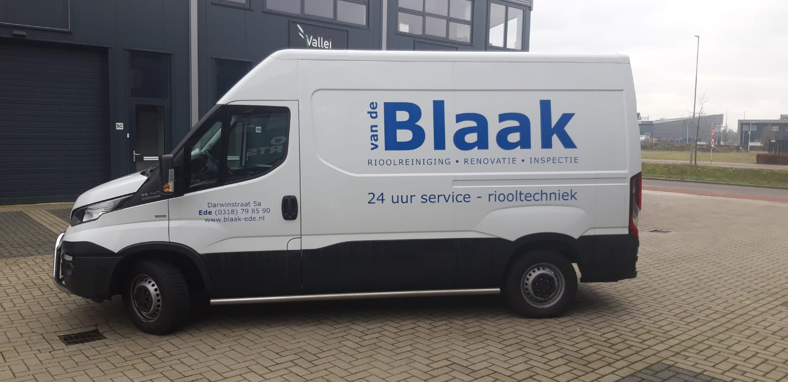

Riool of afvoer verstopt?
Bel ons. Voor een calamiteit is er dag en nacht iemand bereikbaar, ook in het weekend en op feestdagen.
0318798590Kantoor op werkdagen van 8.00 tot 16.00 uur. Of mail naar office@blaak-ede.nl.

Een verstopping verhelpen is een vak apart.
Zeker als het geen standaard verstopping blijkt te zijn. Dan telt ervaring. Onze monteurs werken met een veermachine, waterzuiger, speciale freeskop of hogedrukmachine, afhankelijk van wat er in de leiding zit.
- Toilet
-
Pas als de toiletafvoer niet meer doorstroomt merkt u hoe lastig dat is. Er zijn drie soorten oorzaken:
- opgehoopt toiletpapier en vochtige doekjes;
- wortelgroei in de vuilwaterafvoer, door bomen en struiken rond de leiding of een verouderde gresleiding;
- een vervormde leiding: te weinig of tegenafschot, zand dat binnenloopt door scheuren of breuken, of oude gemetselde putten.
- Keuken
-
Vet, zeep, afwasmiddel en etensresten hopen zich op in de afvoer. U kunt dat deels voorkomen door de afvoer af en toe door te spoelen met keukensoda en daarna een paar liter kokend water.
Toch verstopt? Dan maakt een van onze monteurs de afvoer weer schoon en klaar voor gebruik.
- Douche en wastafel
-
Haar en zeepresten zijn de grootste boosdoeners. Samen zorgen ze voor een flinke prop in de afvoer. Haal de doucheput en het putje van de wastafel regelmatig leeg, dan voorkomt u veel. Zit hij toch dicht, dan lossen wij het op.
- Hemelwaterafvoer
-
De hemelwaterafvoer voert het regenwater af. Is die verstopt, meestal door bladeren en takjes, dan loopt het water over de dakgoot en langs muren en ramen. Twijfel niet en laat hem vakkundig ontstoppen.
Steeds weer verstopt? Dan is het tijd voor nieuw riool.
Oude gresbuizen worden met de jaren slecht. Kragen breken af, delen verschuiven en wortels groeien naar binnen. Wij vervangen het stelsel door PVC.


Zo pakken we het aan
- 1
We komen vrijblijvend langs en bespreken de mogelijkheden, met alle voor- en nadelen.
- 2
U kiest: een vaste prijs via een offerte, of uitvoering op uurbasis.
- 3
Wij doen alles van A tot Z, van het ontgraven van het leidingwerk tot het bestraten van uw tuin of oprit. We werken alleen met gekwalificeerd PVC, PE en PP met het KOMO-keurmerk, volgens het huidige Bouwbesluit.
- 4
Terrein en tuin laten we achter zoals we ze aantroffen.

Eerst kijken, dan pas graven.
Met een camera brengen we problemen in uw riool in beeld die u van buiten niet ziet. Zonder graaf- of breekwerk. Zo vinden we lekkages en de oorzaak van een verstopping.
Met een zender meten we precies op welke plek en hoe diep het probleem zit.
Wilt u de beelden bewaren? U krijgt ze van ons op een USB-stick, vaak samen met een rapport, advies en prijsopgave voor de oplossing.
Inspectie afspreken: 0318 798 5901968
Sinds 1968 een begrip in Ede en omgeving voor verstoppingen, onderhoud, renovatie en inspectie van riolering. VCA gecertificeerd.
“Deze mensen waren bereid ons en de buren te ontdoen van een verstopping op 1 januari. Daar waar andere het lieten afweten stonden deze mensen ondanks de drukte voor ons klaar. Dank jullie wel”
“Fantastische service! Het verhelpen van een verstopping in de keuken, wat een complexe montsterklus bleek te zijn, is zeer goed en vakkundig gedaan door J. van de Blaak & Zn.. Prima prijs-kwaliteitverhouding, ook.”
Neem contact op
Voor vragen, een afspraak of een prijsopgave voor ontstoppen, reinigen of renoveren.
0318 798 590 office@blaak-ede.nl- Adres
- Darwinstraat 5-A
6718 XR Ede - Bereikbaar
- Kantoor ma t/m vr 8.00 tot 16.00 uur
Calamiteitendienst 24/7
